File: 000420.gt.txt (if the image is defective, simply delete all Arabic text and the line will be excluded)
.فليكن لي كما قلت .
File: 000421.gt.txt (if the image is defective, simply delete all Arabic text and the line will be excluded)
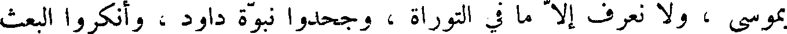
بموسى ، ولا نعرف إلا ما في التوراة ، وجحدوا نبوة داود ، وأنكروا البعث
File: 000422.gt.txt (if the image is defective, simply delete all Arabic text and the line will be excluded)
والنشور ، وامتنعوا من مجالسة الناس والاختلاط بهم ؛ ومن تناول شيئا منهم .
File: 000423.gt.txt (if the image is defective, simply delete all Arabic text and the line will be excluded)
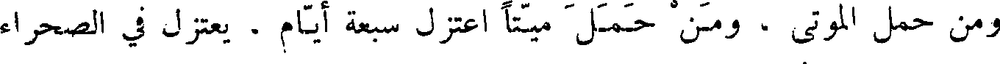
ومن حمل الموتى ، ومن حمل ميتا اعتزل سبعة أيام . يعتزل في الصحراء
File: 000424.gt.txt (if the image is defective, simply delete all Arabic text and the line will be excluded)
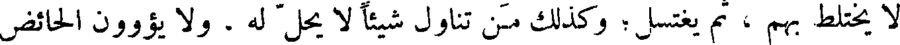
ولا يختلط بهم ، ثم يغتسل وكذلك من تناول شيء لا يحل له . ولا يؤوون الحائض
File: 000425.gt.txt (if the image is defective, simply delete all Arabic text and the line will be excluded)
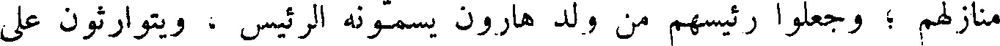
منازلهم ؛ وجعلوا رئيسهم من ولد هارون يسمونه الرئيس ، ويتوارثون على
File: 000426.gt.txt (if the image is defective, simply delete all Arabic text and the line will be excluded)
التوراة،فليس هم في بقعة من بقاع الأرض إلا بجند فلسطين ؛ وكان ملك احاز
File: 000427.gt.txt (if the image is defective, simply delete all Arabic text and the line will be excluded)
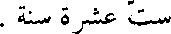
ست عشرة سنة .
File: 000428.gt.txt (if the image is defective, simply delete all Arabic text and the line will be excluded)
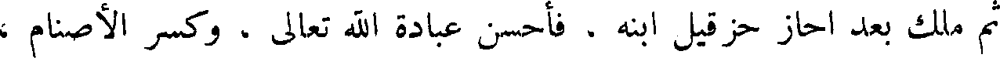
ثم ملك بعد احاز حزقيل ابنه . فاحسن عبادة الله تعالى ، وكسر الأصنام ،
File: 000429.gt.txt (if the image is defective, simply delete all Arabic text and the line will be excluded)
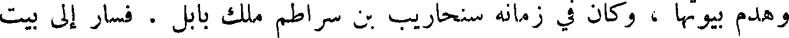
وهدم بيوتها ، وكان في زمانه سنحاريب بن سراطم ملك بابل . فسار إلي بيت
File: 000430.gt.txt (if the image is defective, simply delete all Arabic text and the line will be excluded)
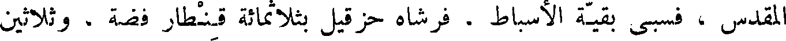
المقدس ، فسبا بقية الأسباط . فرشاه حزقيل بثلاثمائة قنطار فضة ، وثلاثين
File: 000431.gt.txt (if the image is defective, simply delete all Arabic text and the line will be excluded)
قنطار ذهب ، على أن ينصرف ، فأخذها ، ثم غدر ، فلما فعل ذلك دعا الله
File: 000432.gt.txt (if the image is defective, simply delete all Arabic text and the line will be excluded)
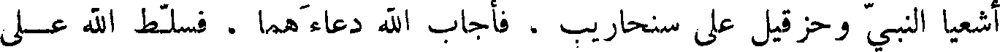
اشعيا النبي وحزقيل على سنحاريب ، فأجاب الله دعاءهما ، فسلط الله على
File: 000433.gt.txt (if the image is defective, simply delete all Arabic text and the line will be excluded)
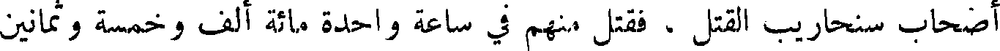
أصحاب سنحاريب القتل ، فقتل منهم في ساعة واحدة مائة ألف وخمسة وثمانين
File: 000434.gt.txt (if the image is defective, simply delete all Arabic text and the line will be excluded)
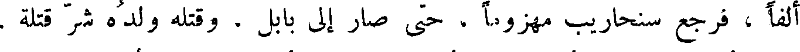
ألفا ، فرجع سنحاريب مهزوما ، حتى صار إلي بابل ، وقتله ولده شر قتله .
File: 000435.gt.txt (if the image is defective, simply delete all Arabic text and the line will be excluded)
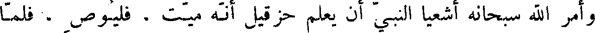
وأمر الله سبحانه اشعيا النبي أن يعلم حزقيل انه ميت . فليوص ، فلما
File: 000436.gt.txt (if the image is defective, simply delete all Arabic text and the line will be excluded)
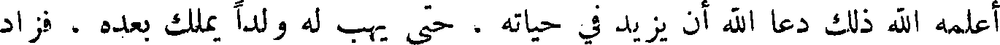
اعلمه الله ذلك دعا الله أن يزيد في حياته ، حتى يهب له ولدا يملك بعده ، فزاد
File: 000437.gt.txt (if the image is defective, simply delete all Arabic text and the line will be excluded)
الله في حياته خمس عشرة سنة ، حتى ولد له ولد .
File: 000438.gt.txt (if the image is defective, simply delete all Arabic text and the line will be excluded)
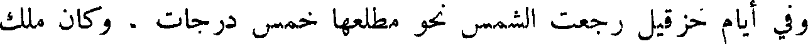
وفي أيام حزقيل رجعت الشمس نحو مطلعها خمس درجات ، وكان ملك
File: 000439.gt.txt (if the image is defective, simply delete all Arabic text and the line will be excluded)
حزقيل سبعا وعشرين سنة .
File: 000440.gt.txt (if the image is defective, simply delete all Arabic text and the line will be excluded)
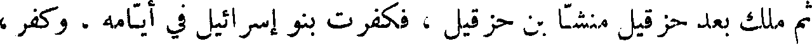
ثم ملك بعد حزقي منشا بن حزقيل ، فكفرت بنو إسرائيل في أيامه ، وكفر ،
File: 000441.gt.txt (if the image is defective, simply delete all Arabic text and the line will be excluded)
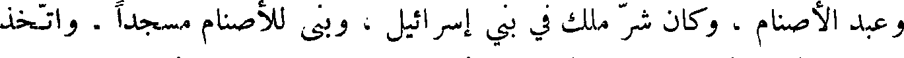
وعبد الأصنام ، وكان شر ملك في بني إسرائيل ، وبنى للأصنام مسجدا . واتخذ
File: 000442.gt.txt (if the image is defective, simply delete all Arabic text and the line will be excluded)
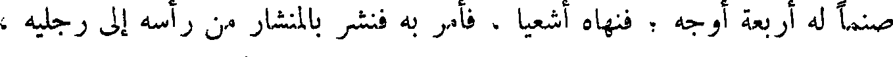
صنما له أربعة اوجه ؛ فنهاه اشعيا ، فأمر به فنشر بالمنشار من رأسه إلي رجليه ،
File: 000443.gt.txt (if the image is defective, simply delete all Arabic text and the line will be excluded)
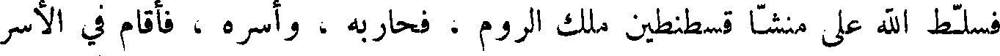
فسلط الله على منشأ قسطنطين ملك الروم ، فحاربه ، وأسره ، فأقام في الأسر
File: 000444.gt.txt (if the image is defective, simply delete all Arabic text and the line will be excluded)
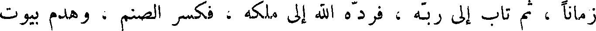
زمانا ، ثم تاب إلي ربه ، فرده الله إلي ملكه ، فكسر الصنم ، وهدم بيوت
File: 000445.gt.txt (if the image is defective, simply delete all Arabic text and the line will be excluded)
على آدم ،
File: 000446.gt.txt (if the image is defective, simply delete all Arabic text and the line will be excluded)
فلم يطاوعه شيء مما خلق الله جل وعز إلا الجنة ، فلما رأى آدم ما في الجنة
File: 000447.gt.txt (if the image is defective, simply delete all Arabic text and the line will be excluded)
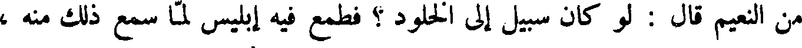
من النعيم قال : لو كان سبيل إلى الخلود ؟ فطمع فيه إبليس لما سمع ذلك منه ،
File: 000448.gt.txt (if the image is defective, simply delete all Arabic text and the line will be excluded)
فبكى ونظر إليه آدم وحواء يبكي ، فقالا له : ما يبكيك ؟ قال : لأنكما
File: 000449.gt.txt (if the image is defective, simply delete all Arabic text and the line will be excluded)
تفارقان هذا ، وما نهاكما ربكما عن هذه الشجرة ، إلا أن تكونا ملكين ،
To Save: `Ctrl+s`, make sure to choose `Webpage, complete`!